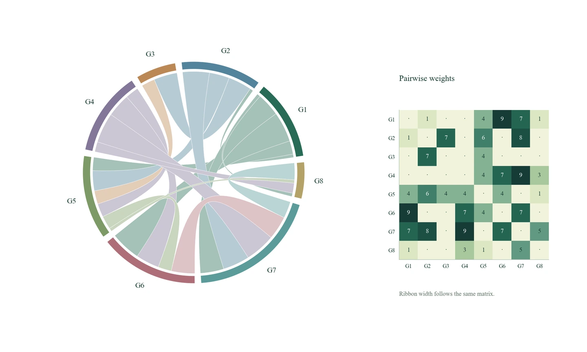
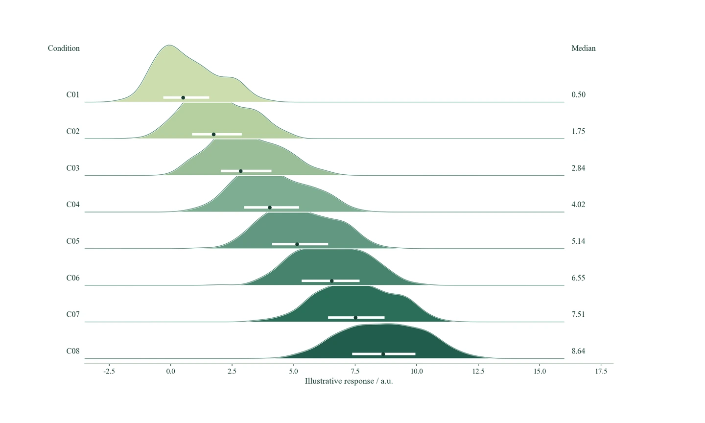

01 / VECTOREMF
MATLAB 绘图模式
适合文档排版和放大查看。用原生图元组织曲线、色块、文字、图例和复杂几何关系。
.m 绘图源码 → .emf 矢量图
时间、空间、分布与约束，
在图中建立联系。
探索结构充分、层次清楚的科研图表。先选适合问题的图型，再选择绘图工具与输出格式。


同一类关系，可以选择不同的表达工具。切换绘图模式，查看对应预览，也可以打开大图或下载原图。
图型演示采用独立生成的示意数据，绘图源码可公开复现。
Python / PNG · 6类图型轨迹与分布包络对应上界，再用同一时间轴展开约束余量。
沿条件展开分布形状，用中位数和四分位距呈现位置与离散程度。
弦带宽度与矩阵权重对应，连接整体网络结构和具体的成对关系。
统一聚类树与矩阵的对象顺序，呈现关系分组、方向与强度。
把连续空间分布与节点连接放在同一坐标系中，观察局部强度与网络结构。
同时呈现约束边界、状态投影路径与位移，说明状态如何进入可行区域。
MATLAB绘制并导出EMF矢量图，Python绘制并导出PNG图像。两条路径分别提供源码与原图。
适合文档排版和放大查看。用原生图元组织曲线、色块、文字、图例和复杂几何关系。
适合插图和在线展示。按明确的画布尺寸与分辨率，输出层次清楚、比例统一的图像。
从时序诊断到空间与关联结构，观看六类图型，以及MATLAB / EMF、Python / PNG两种绘图模式。
下载并解压，让本地研究助手读取SKILL.md。
提供数据，明确图中需要回答的问题。
MATLAB / EMF，或Python / PNG。
请使用Senior-ProjectX，先明确当前数据需要表达的关系，再选择适合的复杂图型。采用MATLAB绘制并导出EMF，或采用Python绘制并导出PNG；检查字体、图例、轴标、配色和比例，提交绘图源码与最终图件。